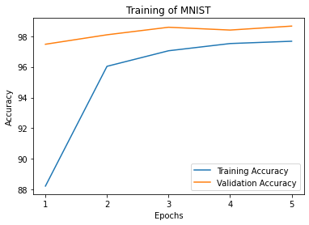
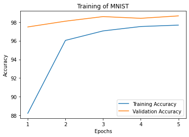

Tips and Tricks
Note
See the notebook here
Run in Google Colab
Poutyne over a variety of tools for fine-tuning the information generated during the training, such as colouring the training update message, a progress bar, multi-GPUs, user callbacks interface and a user naming interface for the metrics’ names.
Let’s import all the needed packages.
import os
import math
import shutil
import matplotlib.pyplot as plt
import numpy as np
from sklearn.metrics import roc_auc_score
import torch
import torch.nn as nn
import torch.optim as optim
from torch.utils.data import random_split, DataLoader
from torchvision import transforms, utils
from torchvision.datasets.mnist import MNIST
from poutyne import set_seeds, Model, ModelCheckpoint, CSVLogger, Callback, ModelBundle, SKLearnMetrics, plot_history
Hyperparameters, Dataset and Network
In this section, we setup the hyperparameters, dataset and network we will use throughout these tips and tricks.
Training Constants
Now, let’s set our training constants. We first have the CUDA device used for training if one is present. Second, we set the train_split to 0.8 (80%) to use 80% of the dataset for training and 20% for testing the trained model. Third, we set the number of classes (i.e. one for each digit). Finally, we set the batch size (i.e. the number of elements to see before updating the model), the learning rate for the optimizer, and the number of epochs (i.e. the number of times we see the full dataset).
cuda_device = 0
device = torch.device("cuda:%d" % cuda_device if torch.cuda.is_available() else "cpu")
train_split_percent = 0.8
num_classes = 10
batch_size = 32
learning_rate = 0.1
num_epochs = 5
In Poutyne, as we will see in the following sections, you can define your own loss functions and optimizers. However, we can also pass magic strings to use PyTorch’s standard optimizers and loss functions. Furthermore, for the optimizer, we can also use a dictionary to set other parameters as the learning rate, for instance, if we don’t want the default learning rate.
Here, we initialize the dictionary for our optimizer as well as the string for our loss function. We thus use SGD with the specified learning rate and the cross-entropy loss.
optimizer = dict(optim='sgd', lr=learning_rate) # Could be 'sgd' if we didn't need to change the learning rate.
loss_function = 'cross_entropy'
Loading the Dataset
The following code helps load the MNIST dataset and creates the PyTorch DataLoaders that split our datasets into batches. Then, the train DataLoader shuffles the examples of the training dataset to draw the examples without replacement.
full_train_dataset = MNIST('./datasets', train=True, download=True, transform=transforms.ToTensor())
test_dataset = MNIST('./datasets', train=False, download=True, transform=transforms.ToTensor())
num_data = len(full_train_dataset)
train_length = int(math.floor(train_split_percent * num_data))
valid_length = num_data - train_length
train_dataset, valid_dataset = random_split(full_train_dataset,
[train_length, valid_length],
generator=torch.Generator().manual_seed(42))
train_loader = DataLoader(train_dataset, batch_size=batch_size, num_workers=2, shuffle=True)
valid_loader = DataLoader(valid_dataset, batch_size=batch_size, num_workers=2)
test_loader = DataLoader(test_dataset, batch_size=batch_size, num_workers=2)
Initializing the Network
We create a fonction to initialize a simple convolutional neural network.
def create_network():
return nn.Sequential(
nn.Conv2d(in_channels=1, out_channels=16, kernel_size=3, padding=1),
nn.ReLU(),
nn.MaxPool2d(2),
nn.Conv2d(in_channels=16, out_channels=32, kernel_size=3, padding=1),
nn.ReLU(),
nn.MaxPool2d(2),
nn.Dropout(0.25),
nn.Flatten(),
nn.Linear(32*7*7, 128),
nn.ReLU(),
nn.Dropout(0.5),
nn.Linear(128, num_classes)
)
Vanilla Usage
The following code trains our network in the simplest way possible with Poutyne. We use the accuracy metric so that we can see the performance during training.
# Instantiating our network
network = create_network()
# Poutyne Model on GPU
model = Model(network, optimizer, loss_function,
batch_metrics=['accuracy'],
device=device)
# Train
model.fit_generator(train_loader, valid_loader, epochs=num_epochs)
# Test
test_loss, test_acc = model.evaluate_generator(test_loader)
Plotting Training
The training methods in Poutyne returns a list of dictionaries containing the metrics output during training. Using Poutyne, it is then possible to plot this training history.
_ = plot_history(history)


It is also possible to restrict the metrics shown and to customize the plots by using custom labels and titles.
_ = plot_history(
history,
metrics=['loss', 'acc'],
labels=['Loss', 'Accuracy'],
titles='Training of MNIST',
)
 

Initilalizing Your Optimizer and Loss Function Yourself
Instead of using magic strings for the optimizer and the loss function, it’s quite easy to initialize your own and pass them to Poutyne.
# Instantiating our network
network = create_network()
# Instantiating our loss function and optimizer
own_optimizer = optim.SGD(network.parameters(), lr=learning_rate)
own_loss_function = nn.CrossEntropyLoss()
# Poutyne Model on GPU
model = Model(network, own_optimizer, own_loss_function,
batch_metrics=['accuracy'],
device=device)
# Train
model.fit_generator(train_loader, valid_loader, epochs=num_epochs)
# Test
test_loss, test_acc = model.evaluate_generator(test_loader)
Bypassing PyTorch DataLoaders
Above, we defined DataLoaders for our datasets. However, with Poutyne, it is not strictly necessary since it provides the fit_dataset and evaluate_dataset methods to which you can pass the necessary parameters such as the batch size. Under the hood, Poutyne initializes the DataLoaders for you.
# Instantiating our network
network = create_network()
# Poutyne Model on GPU
model = Model(network, optimizer, loss_function,
batch_metrics=['accuracy'],
device=device)
# Train
model.fit_dataset(train_dataset,
valid_dataset,
epochs=num_epochs,
batch_size=batch_size,
num_workers=2)
# Test
test_loss, test_acc = model.evaluate_dataset(test_dataset,
batch_size=batch_size,
num_workers=2)
Using Callbacks
One nice feature of Poutyne is callbacks. Callbacks allow doing actions during the training of the neural network. In the following example, we use three callbacks. The first that saves the latest weights in a file to be able to continue the optimization at the end of training if more epochs are needed. The second that saves the best weights according to the performance on the validation dataset. The last that saves the displayed logs into a TSV file.
# Saves everything into saves/convnet_mnist
save_path = "saves/convnet_mnist"
os.makedirs(save_path, exist_ok=True)
callbacks = [
# Save the latest weights to be able to continue the optimization at the end for more epochs.
ModelCheckpoint(os.path.join(save_path, 'last_epoch.ckpt')),
# Save the weights in a new file when the current model is better than all previous models.
ModelCheckpoint(os.path.join(save_path, 'best_epoch_{epoch}.ckpt'), monitor='val_acc', mode='max',
save_best_only=True, restore_best=True, verbose=True),
# Save the losses and accuracies for each epoch in a TSV.
CSVLogger(os.path.join(save_path, 'log.tsv'), separator='\t'),
]
# Instantiating our network
network = create_network()
# Poutyne Model on GPU
model = Model(network, optimizer, loss_function,
batch_metrics=['accuracy'],
device=device)
# Train
model.fit_generator(train_loader,
valid_loader,
epochs=num_epochs,
callbacks=callbacks)
# Test
test_loss, test_acc = model.evaluate_generator(test_loader)
Making Your Own Callback
While Poutyne provides a great number of predefined callbacks, it is sometimes useful to make your own callback.
In the following example, we want to see the effect of temperature on the optimization of our neural network. To do so, we either increase or decrease the temperature during the optimization. As one can see in the result, temperature either as no effect or has a detrimental effect on the performance of the neural network. This is so because the temperature has for effect to artificially changing the learning rates. Since we have found the right learning rate, increasing or decreasing, it shows no improvement on the results.
class CrossEntropyLossWithTemperature(nn.Module):
"""
This loss module is the cross-entropy loss function
with temperature. It divides the logits by a temperature
value before computing the cross-entropy loss.
Args:
initial_temperature (float): The initial value of the temperature.
"""
def __init__(self, initial_temperature):
super().__init__()
self.temperature = initial_temperature
self.celoss = nn.CrossEntropyLoss()
def forward(self, y_pred, y_true):
y_pred = y_pred / self.temperature
return self.celoss(y_pred, y_true)
class TemperatureCallback(Callback):
"""
This callback multiply the loss temperature with a decay before
each batch.
Args:
celoss_with_temp (CrossEntropyLossWithTemperature): the loss module.
decay (float): The value of the temperature decay.
"""
def __init__(self, celoss_with_temp, decay):
super().__init__()
self.celoss_with_temp = celoss_with_temp
self.decay = decay
def on_train_batch_begin(self, batch, logs):
self.celoss_with_temp.temperature *= self.decay
So our loss function will be the cross-entropy with temperature with an initial temperature of 0.1 and a temperature decay of 1.0008.
loss_function = CrossEntropyLossWithTemperature(0.1)
callbacks = callbacks + [TemperatureCallback(loss_function, 1.0008)]
Now let’s test our training loop for one epoch using the accuracy as the batch metric.
# Instantiating our network
network = create_network()
# Poutyne Model on GPU
model = Model(network, optimizer, custom_loss_function,
batch_metrics=['accuracy'],
device=device)
# Train
model.fit_generator(train_loader,
valid_loader,
epochs=num_epochs,
callbacks=callbacks)
# Test
test_loss, test_acc = model.evaluate_generator(test_loader)
Using ModelBundle
Most of the time, when using Poutyne (or even PyTorch in general), we will find ourselves in an iterative model hyperparameters finetuning loop. For efficient model search, we will usually wish to save our best performing models, their training and testing statistics and even sometimes wish to retrain an already trained model for further tuning. All of the above can be easily implemented with the flexibility of Poutyne Callbacks, but having to define and initialize each and every Callback object we wish for our model quickly feels cumbersome.
This is why Poutyne provides a ModelBundle class, which aims specifically at enabling quick model iteration search, while not sacrificing the quality of a single experiment - statistics logging, best models saving, etc. As the name says, ModelBundle is actually a simple wrapper between a PyTorch network and Poutyne’s core Callback objects for logging and saving. Given a working directory where to output the various logging files and a PyTorch network, the ModelBundle class reduces the whole training loop to a single line.
The following code uses Poutyne’s ModelBundle class to train a network for 5 epochs. The code is quite simpler than the code in the Poutyne Callbacks section while doing more (only a few lines). Once trained for 5 epochs, it is then possible to resume the optimization at the 5th epoch for 5 more epochs until the 10th epoch using the same function.
def train_model_bundle(network, name, epochs=5):
"""
This function creates a Poutyne ModelBundle, trains the input module
on the train loader and then tests its performance on the test loader.
All training and testing statistics are saved, as well as best model
checkpoints.
Args:
network (torch.nn.Module): The neural network to train.
working_directory (str): The directory where to output files to save.
epochs (int): The number of epochs. (Default: 5)
"""
# Everything is going to be saved in ./saves/{name}.
save_path = os.path.join('saves', name)
# Poutyne ModelBundle
model_bundle = ModelBundle.from_network(
save_path,
network,
optimizer=optimizer,
task='classif',
device=device,
)
# Train
model_bundle.train(train_loader, valid_loader, epochs=epochs)
# Test
model_bundle.test(test_loader)
network = create_network()
train_model_bundle(network, 'convnet_mnist_model_bundle', epochs=5)
Notice how setting task='classif' when instantiating ModelBundle adds for use our loss function, the batch metric accuracy, the epoch metric F1 and set up callbacks that use them. If you wish, you still can use your own loss function and metrics instead of passing this argument.
We have trained for 5 epochs, let’s now resume training for another 5 epochs for a total of 10 epochs. Notice that we reinstantiate the network. ModelBundle will load back the weights for us and resume training.
network = create_network()
train_model_bundle(network, 'convnet_mnist_model_bundle', epochs=10)
Coloring
Also, Poutyne use by default a coloring template of the training step when the package colorama is installed.
One could either remove the coloring (progress_options=dict(coloring=False)) or set a different coloring template using the fields:
text_color, ratio_color, metric_value_color, time_color and progress_bar_color.
If a field is not specified, the default color will be used.
See available colors in colorama’s source code.
Here an example where we set the text_color to RED and the progress_bar_color to LIGHTGREEN_EX.
progress_options = dict(
coloring=dict(text_color="RED", progress_bar_color="LIGHTGREEN_EX")
)
# Instantiating our network
network = create_network()
# Poutyne Model on GPU
model = Model(network, optimizer, loss_function,
batch_metrics=['accuracy'],
device=device)
# Train
model.fit_generator(train_loader,
valid_loader,
epochs=num_epochs,
progress_options=progress_options)
# Test
test_loss, test_acc = model.evaluate_generator(test_loader,
progress_options=progress_options)
Epoch metrics
It’s also possible to used epoch metrics such as F1. You could also define your own epoch metric using the EpochMetric interface.
# Instantiating our network
network = create_network()
# Poutyne Model on GPU
model = Model(network, optimizer, loss_function,
batch_metrics=['accuracy'],
epoch_metrics=['f1'],
device=device)
# Train
model.fit_generator(train_loader, valid_loader, epochs=num_epochs)
# Test
test_loss, (test_acc, test_f1) = model.evaluate_generator(test_loader)
Furthermore, you could also use the SKLearnMetrics wrapper to wrap a Scikit-learn metric as an epoch metric. Below, we show how to compute the AUC ROC using the SKLearnMetrics class.
def softmax(x, axis=1):
"""
Compute softmax function.
"""
e_x = np.exp(x - x.max(axis=axis, keepdims=True))
return e_x / e_x.sum(axis=axis, keepdims=True)
def roc_auc(y_true, y_pred, **kwargs):
"""
Since the `roc_auc_score` from Scikit-learn requires normalized probabilities,
we use the softmax function on the predictions.
"""
y_pred = softmax(y_pred)
return roc_auc_score(y_true, y_pred, **kwargs)
# kwargs are keyword arguments we wish to pass to roc_auc.
roc_epoch_metric = SKLearnMetrics(roc_auc,
kwargs=dict(multi_class='ovr', average='macro'))
# Instantiating our network
network = create_network()
# Poutyne Model on GPU
model = Model(network, optimizer, loss_function,
batch_metrics=['accuracy'],
epoch_metrics=['f1', roc_epoch_metric],
device=device)
# Train
model.fit_generator(train_loader, valid_loader, epochs=num_epochs)
# Test
test_loss, (test_acc, test_f1, test_roc) = model.evaluate_generator(test_loader)
Custom Metric Names
It’s also possible to name the metric using a tuple format (<metric name>, metric). That way, it’s possible to use multiple times the same metric type (i.e. having micro and macro F1-score).
# Instantiating our network
network = create_network()
# Poutyne Model on GPU
model = Model(network, optimizer, loss_function,
batch_metrics=[("My accuracy name", 'accuracy')],
epoch_metrics=[("My f1 name", 'f1')],
device=device)
# Train
model.fit_generator(train_loader, valid_loader, epochs=num_epochs)
# Test
test_loss, (test_acc, test_f1) = model.evaluate_generator(test_loader)
Multi-GPUs
Finally, it’s also possible to use multi-GPUs for your training either by specifying a list of devices or using the arg "all" to take them all.
Note
Obviously, you need more than one GPUs for that option.
In our case here, multi-gpus takes more time because the task is not big enough to profit from multi-gpus.
# Instantiating our network
network = create_network()
# Poutyne Model on GPU
model = Model(network, optimizer, loss_function,
batch_metrics=['accuracy'],
device="all")
# Train
model.fit_generator(train_loader, valid_loader, epochs=num_epochs)